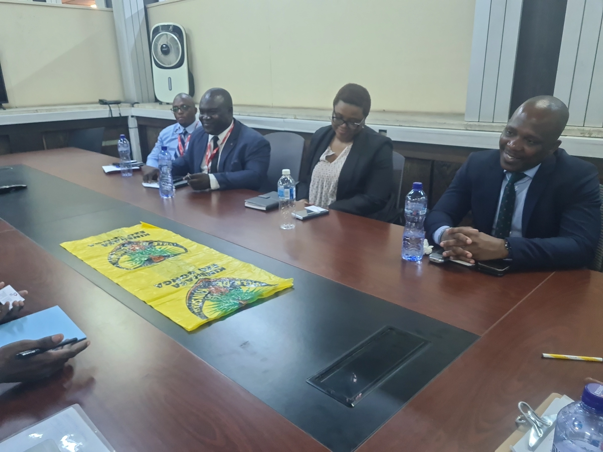
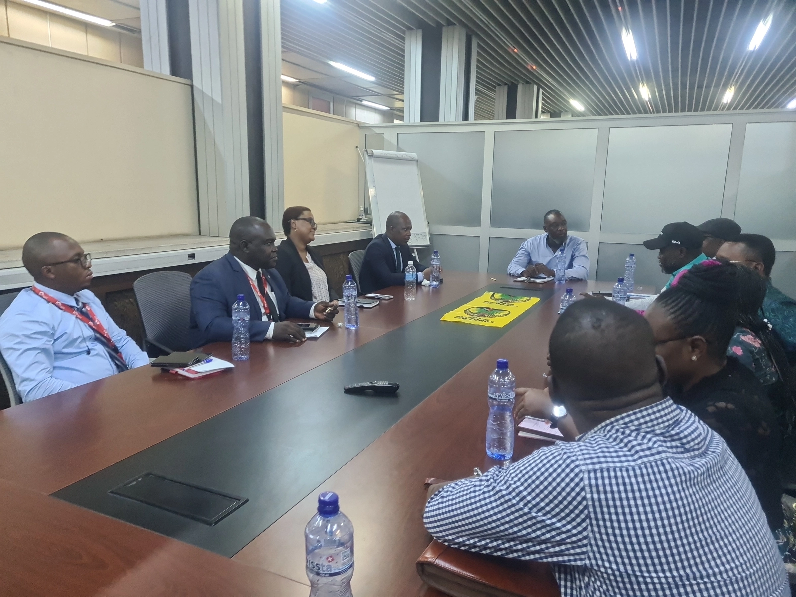

Ces photographies fournies par la fédération illustrent des temps de rencontre entre les participants.


LA VIE DE LA FÉDÉRATION
Une sélection de photographies des rencontres de la fédération.
Découvrir la publication

Photographies de la fédération EN IMAGES
Ces photographies fournies par la fédération illustrent des temps de rencontre entre les participants.
Collecte, gestion et valorisation des déchets en RDC.